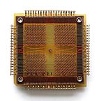

public: True class: center, middle # 调bug的乐趣与困难 蒋炎岩 <jyy@nju.edu.cn> 南京大学计算机软件研究所 --- # 概述 ⚠️ 警告：.red[10.14是Lab1的截止日期]；.red[PA2已经启动] ---- > 能不能延长deadline？ > > 每天都写了一点点 但是前段时间确实懈怠了 > > bug调不出来就有些畏难 ---- 程序都写不对？主要是没有人教过你们 * 如何调 (不是程序的) bug * 如何调 (程序的) bug --- class: center, middle # 如何调 (不是程序的) bug --- # PA.red[体验极差] 成天折腾各种问题： ``` bash: curl: command not found ``` ---- ``` fatal error: 'sys/cdefs.h': No such file or directory #include <sys/cdefs.h> ``` ---- ``` make[2]: *** run: No such file or directory. Stop. nexus-am/Makefile.app:31: recipe for target 'run' failed make[1]: *** [run] Error 2 ... ``` --- # 为什么体验这么差？ 你们是.red[计算机系]的学生 > 没听说过哪个大学计算机系学生.red[不学编程]的。 ---- 蓄爷的本意：编程在练习和试错中自学 不知道谁：.red[做做OJ题训练呗] * 不由自主培养了大家面向OJ编程的习惯：只看测试用例对不对 * 同时缺乏指导和纠正，坏的惯性养成了，纠正需要更大的代价(PA体验极差) ---- 事已至此，抱怨什么也没用了，只能.red[硬着头皮上了]。 --- # 调试 (不是程序的) bug UNIX世界里你做任何事情都是在.red[编程] * 因此配置错、make错等，都是.red[程序]或.red[输入/配置]有bug * (输入/配置可以看成是程序的一部分) ---- .center[正确的态度：.red[把所有问题当程序来调试]] * 你写了一个程序，现在这个程序出bug了 (例如Segmentation Fault)，你是怎样排查这个问题的？ <br> > T. Xu, et al. Do not blame users for misconfigurations. In *Proc. of SOSP*, 2013. --- class: center, middle # 调试程序的理论 (1) --- # 在讲理论之前 你们做PA2的时候就会懂了： ## 1. .red[机器永远是对的] > 不管是crash了，图形显示不正常了，还是HIT BAD TRAP了，最后都是你自己背锅 ## 2. .red[未测代码永远是错的] > 嘿嘿嘿嘿嘿。你以为最不可能出bug的地方，往往bug就在那躺着 --- # 调试理论 程序是“计算”的.red[抽象] * CPU实际执行C程序(翻译成的指令序列) * NEMU模拟执行C程序(翻译成的指令序列) Fault (.green[程序/输入/配置错]) → Error → Failure (.red[可观测]) * .red[bug] (fault)触发：发现执行结果错了(failure)，比如Segmentation Fault、编译错误、Make返回错误、#include找不到文件…… * .red[debug]：把程序执行的每一条语句写出来，从头开始(或二分)看序执行首次发现“不对”的地方(error) ---- 但这个理论有一个非常明显的缺陷：对OJ题之类的小程序还行，对于一个软件、大程序，根本.red[没法用] --- # 调试理论 (cont'd) 计算是现实世界任务的.red[抽象] * 我们很容易用.red[一小句话]来概括.red[一大段程序执行过程] * 并且排除/确认其中的问题 ---- 例如你写了一个OJ题，出bug了但不知道是在哪里。算法是先快速排序，再做二分查找，你调试的时候使用： ```c // 打印一些的a[i]的值人工确认 for (int i = 1; i < n; i++) assert(a[i] < a[i+1]); ``` 就能把bug定位在排序/查找阶段了。 --- # 以make工具为例 我们都知道make的工作原理(说人话版本)： * 解析makefile，建立dependency graph * 扫描时间戳，整理出需要执行的规则，拓扑排序 * 按照顺序执行规则 -- count: false ---- 现在make的输入(makefile)有bug需要调试，回答这些问题才是解决问题的关键： * .red[make到底是不是这样工作的？] * .red[如果是，它到底解析出了哪些规则？] * .red[运行时调用了哪些命令？] ---- .center[(实例展示)] --- # 调试理论：精化(refinement) 在抽象的层次上不解决问题，就需要更.red[具体]一点 * 关键变量的数值是什么？它们对吗？ * 关键的分支是否执行正确？ * 预期被调用的函数是否调用？ ---- 恭喜你：进入时间黑洞 --- class: center, middle # 更多的例子 --- # 例子：ssh 大家经常要连接到Docker中的ssh * `ssh -p 20022 ics@127.0.0.1`，每次都要打(找)这条命令？ * 每次都要输密码，我真后悔弄了一个很长的密码？ 经过了STFW，发现：可以使用`.ssh/config`起个.green[别名]： ``` Host vm Hostname 127.0.0.1 Port 20022 User ics ``` 并且通过配置秘钥实现免密码登陆 ---- 结果：经过了一通配置，.red[失败]，还是要密码😂 --- # ssh秘钥登陆还要密码？ STFW：很难描述问题的.red[root cause]，因此很难搜索 * ssh public key authentication fail; still require password; ... * 大家经常采用的办法：重新做一遍；换一个教程…… (中🔫) -- count: false ---- W/M并不是万能的，大部分时候需要.red[自己动手排查问题] * ssh是一个程序，它有它的执行过程 * 一定是在某一步，程序的.red[状态]不符合预期 * 理论解决：.green[使用二分法找到这个状态] * ❓实际上，那咋办呢？ --- # How to Debug? Debug (fault localization)的基本理论回顾： * Fault (.green[程序/输入/配置错]) → Error → Failure (.red[可观测]) * 绝大部分工具的Failure都有“原因报告”，因此能帮助你快速定位fault ---- 刚才的例子 * 没有“原因报告” (或原因报告不准) → 抓瞎 * 我们需要更详细的程序执行.red[过程] (log) → 既然我们有需求，那.green[别人肯定也会有这个需求] → 肯定已经有人搞定这个了 > X. Zhao, et al. Log20: Fully automated optimal placement of log printing statements under specified overhead threshold. In *Proc. of SOSP*, 2017. --- # How to Debug? (cont'd) 想办法理解程序的.red[执行过程]，弄清楚到底为何导致了bug * `ssh`：使用`-v`选项检查日志 * `gcc`: 使用`-v`选项打印各种过程 * `make`：使用`-n`选项查看完整命令 * `make -n | grep -ve '^\(echo\|mkdir\)'`可以查看完整编译nemu.red[到底]发生了什么 ---- 不仅限于gdb，其实在各个程序都在更高.red[层次]上提供了调试的工具，帮助用户/开发者了解程序的.red[行为] * 怎样更好地理解程序行为，是个非常好的.green[研究问题] --- # 例子：找不到`sys/cdefs.h` `'sys/cdefs.h': No such file or directory`，找不到文件 (这看起来是用`perror()`打印出来的哦！) * 经过STFW，`#include` = 复制粘贴，自然会经过.red[路径解析] * (折腾20分钟) 明明`/usr/include/x86_64-linux-gnu/sys/cdefs.h`.red[就在那里啊] (`man 1 locate`) → 极度挫败，体验极差 -- count: false ---- 推理：`#include <>`也不是万能的，一定有一些.red[搜索路径] * `gcc -m32 -v`验证：`-m32`使搜索路径发生了变化 → 解决 ---- 这是.red[标准]的解决问题办法：.green[自己动手排查] * 在面对复杂/小众问题时比STFW有效 --- # ⚠️ (不要忽略的)警告 ❌ .red[错误] (而且.red[危险])的做法 * 找到大腿同学/群/老师/助教：出错了帮我搞下 * 的确学到了经验(如何解决.red[这个]问题)，但下次可能依旧抓瞎 * 刚开始不可避免感到困难，但必须克服 ------ ✅ .green[正确]的做法 * 自行解决问题：检查log，排查问题发生的原因；STFW, RTFM * 实在无法解决，阅读[提问的智慧](https://github.com/ryanhanwu/How-To-Ask-Questions-The-Smart-Way/blob/master/README-zh_CN.md)后提问 * 同样，帮助别人解决问题，可以提供STFW的.green[方法和思路] --- class: center, middle # 调试程序的理论 (2) --- # 调试NEMU的难处 .float-right[] 我们的NEMU可.red[没有这些debug信息]，指令执行着执行着，悄悄就错了，直到在某个地方死循环 * 到底哪里错了呢？ * 对于cpu-test，还能把指令一条一条打印出来看 * 打字游戏的时候bug了，那么多指令…… * LiteNES bug了，这上哪玩啊…… --- # (1) 定位出错点 如果你有一个已知的、能保证触发bug的程序状态(例如执行了1,000,000条指令)，你已经完成了万里长征的第一步 ---- 例子：Segmentation Fault，怎么办呢 (segfault.c)？ * Segmentation Fault是一个非常好的出错点：某条指令访问了非法内存 * 无非就是空指针、野指针、栈溢出、堆溢出…… .float-right[] .red[怎样定位Segmentation Fault]发生时的位置？ * (core dumped) * gdb - 自带backtrace，95%都能帮你定位到问题 --- # (1) 定位出错点 (cont'd) 实现错 (`nemu_assert`失败, HIT BAD TRAP) * 计算结果一般立即检查，出错点大概率在assert附近 * 检查nemu-log执行过的指令 * 检查每条指令执行前后系统状态的变化 ---- 其他莫名错误 * 增加一些额外的`Log`和`Assert` * 例如打印I/O的数值 ← 底层执行 * 打印函数调用的情况等 ← 高层抽象 --- # (2) 向前追踪 恭喜你！你已经找到了一条指令，算出了错误的值，例如 ``` addl $2, %eax # nemu_assert(%eax == 4), bug ``` 但此时还有三种可能的情况 * `%eax`是对的，`addl`错了 * `addl`是对的，`%eax`错了 (addl: 这锅我不背) * 值给错了指令也算错了，令人智熄 (不要笑，就是你) ---- 此处有.red[时间黑洞] --- # 启发：输出什么调试信息？ 定位出错点、向前追踪都既需要.red[底层详细]的调试信息(用于排查具体问题)，也需要.red[高层抽象]的调试信息(用于快速定位) 所以你需要不同类型的logs！ * 能够快速帮你映射到程序执行的总体走势(function call logs) * 指令执行的日志(框架代码已经提供了) * 更细致的指令检查工具(PA1的内容，知道为啥要做PA1了吧？) * 其他有用的信息(例如I/O指令的内容、内存访问的日志等，按需打开) ---- 核心思想：输出足够的信息，在.green[各个层面]上理解程序的执行 --- class: center, middle # 实际中的Debugging --- # 残酷的现实 说了那么多，听起来都对，但.red[出bug了，我还是完全不知道该怎么下手啊]！大腿快来帮帮我…… ---- 主要原因：对代码的一些关键部分不熟悉且畏惧(.red[缺乏自信]，或者.red[缺乏基础知识])，抱有“我不理解这个也行”的侥幸信息 * x86手册太难读，从网上找点旁门资料，反正过了测试就行 * C语言这里不太看的懂，算了，反正只要写我的部分就行 * Makefile又长又杂，估计跟我也没啥关系(你是否错过了nemu的编译选项？) 在PA0, PA1中自己解决问题，STFW, RTFM的过程，就是.red[消除畏惧]的过程，但有些同学不理解 --- # 实际中的Debugging 努力做到.red[你知道程序里的每一个细节] * 能够理解程序任意时刻的状态(PA1的表达式求值) * 能在程序的某个状态下知道下一条指令的行为(x86手册)，从而检查模拟器是否实现正确 * 能非常方便顺手地检查程序的状态(PA1的断点) ---- “为你自己的代码负责” * 写代码不仅是写代码，更重要的是与代码配套的.red[基础设施] * 戒掉“糊弄”一下的心态，试着把一件事做到自己100%的极限 --- # 基础设施：轮子的重要性 以下基础设施没有一个是必须的，有没有它们会带来什么影响？ * 有/没有native vs. x86-nemu * 有/没有Makefile * 有/没有指令log * 有/没有monitor * 有/没有cputest * 有/没有differential testing -- count: false ---- .red[“有”是没有止境的] * 在现有的基础设施难以满足你的要求的时候，不妨.red[创造新的] * 连接了课程和research (自动测试/调试技术；快照；deterministic replay, ...) --- class: center, middle # 没有捷径 RTFM, STFW 机器永远是对的；未测代码永远是错的 <br><br> # 不要恐惧 缺什么补什么